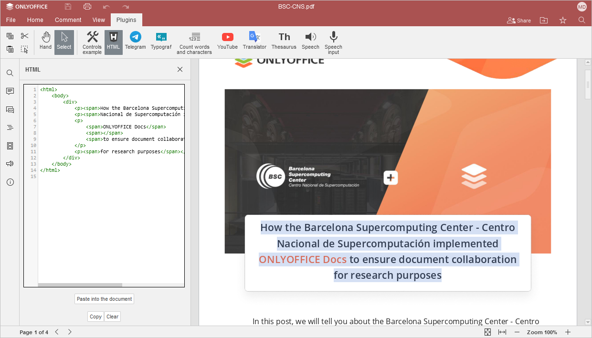

Uređivanje HTML-a
Ako želite da dobijete tekst kao HTML kod, koristite HTML dodatak.
Počevši od ONLYOFFICE Docs verzije 8.2, urednici ne dolaze sa dodacima po defaultu. Dodaci se instaliraju putem Upravljača dodacima.
- Otvorite karticu Dodaci i kliknite na Preuzmi i nalepi HTML.
- Izaberite potreban sadržaj.
- HTML kod izabranog paragrafa biće prikazan u polju dodatka na levom panelu. Možete izmeniti kod da biste promenili osobine teksta, npr. veličinu fonta ili porodicu fontova, itd.
- Kliknite na dugme Kopiraj da kopirate ceo kod.
- Da biste obrisali polje dodatka, kliknite na dugme Obriši.

Za više informacija o HTML dodatku i njegovoj instalaciji, pogledajte stranicu dodatka na AppDirectory.